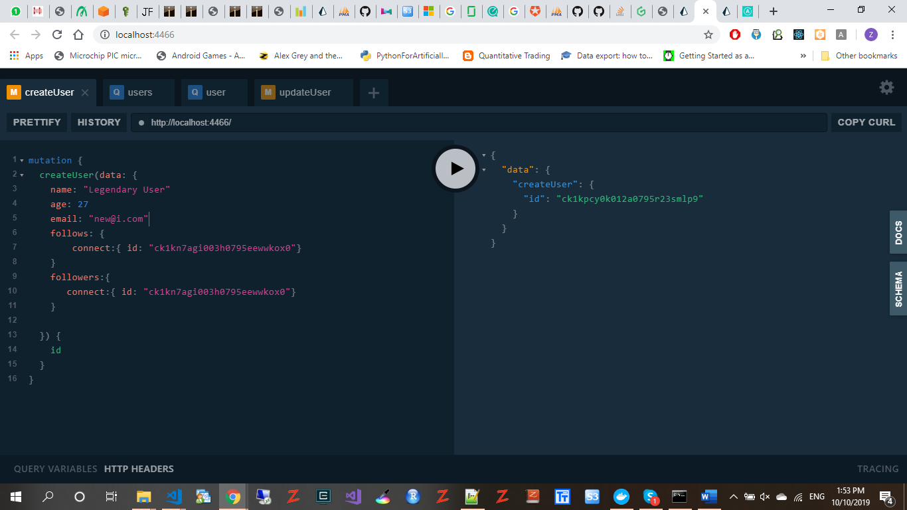

CREATE USER ENDPOINT

GET ALL USERS
GET USER BY ID
UPDATE USER QUERY
CREATE POST
DATABASE TABLE CREATED:
DATA IN THE USER TABLE:
DATA IN THE _FOLLOWERS TABLE:
DOKER IS USED TO HOST THE DATABASE AND ALSO AS THE PRISMA ENDPOINT